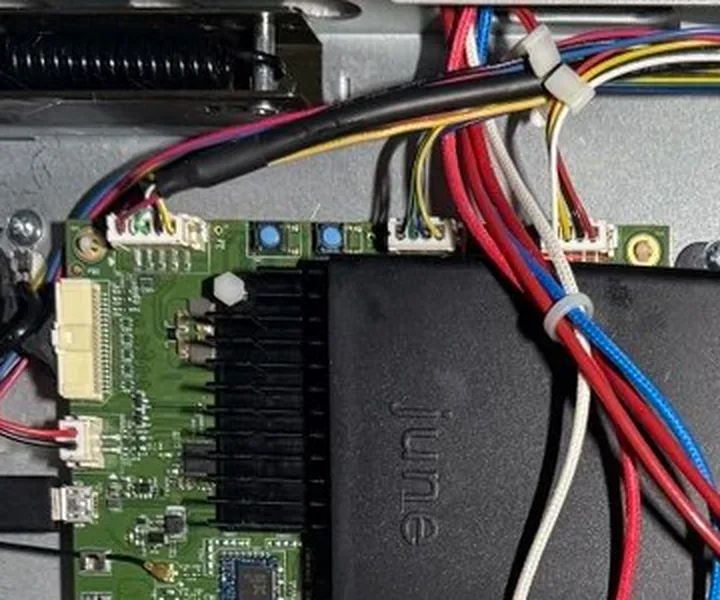

Setup walkthrough
Watch the setup, step by step
Four steps on a 3D model of the June oven. Press play, pick any step, or drag to look around.
Right now Project July works on the 2nd-gen June Oven. The 1st gen should work but is untested, and the 3rd gen is blocked by hardware limits. See compatibility.
Early access · version 0.5 Not for everyone yet
Project July is in early access. We're reviewing feedback from the first testers and fixing what they find. If you're less comfortable with technical steps, please hold off until more people have tested it.
Whoever you are, make a backup first. It takes 15 to 30 minutes, and the installer can restore the oven from it if anything goes wrong. How to back up and restore
Before you start: the USB stick
Download the installer image
It will be linked on the home page once testing is complete. Check its SHA-256 checksum before you use it.
Put Ventoy on the stick and copy the image to it
Ventoy is a free tool for Windows and Linux. Installing it erases whatever is on the stick. Then copy the image onto the large drive called Ventoy, and keep that name: the installer saves its logs and backups there. Step-by-step guide
Start the laptop from it
Plug the stick in, switch the laptop on and press its boot-menu key straight away. It's often F12, F11, F9 or Esc, and usually shown briefly on screen. Then pick the USB stick. If Secure Boot stops it, see starting the laptop. On an Intel Mac, hold Option while it starts. Macs with Apple chips (M1 and later) can't start from this stick.
The laptop's own system and files are left alone. Take the stick out and restart to go back to normal. The installer guide shows every screen.
What you need
- A micro-USB cable that carries data (not a charge-only cable)
- A laptop
- A USB stick, prepared as described here
- A screwdriver
The four steps
Unplug the oven, lay it on its side and take out the 7 screws
Unplug it from the wall first. Lay it down on its left side, bottom plate facing you, and take out the seven screws: four in the corners, one in the middle and two on the cord housing. Lift the plate off and rest its edge on the shelf. The power cord stays attached to the plate.
Plug in the micro-USB cable
The port is on the edge of the board. Hold the plug with its flat side facing out, ease it in straight and press gently until it clicks.
Start the laptop from the USB stick and choose Install
Plug the other end of the cable into the laptop and start it from the USB stick. Ventoy and the June Local menu start the installer by themselves. Pick Install June Local, then Next: connect the oven. It then asks you to put the oven in recovery mode. What the installer shows
Hold SW2 while you plug the oven back in, then press Install
Find SW2: the silver switch with a blue cap, next to the heatsink (see the photo). Press and hold it, plug the oven back into the wall, and keep holding for about 10 seconds. When the laptop says the oven is found, let go and press Install June Local. The installer does the rest in about two minutes.
Mains power
Unplug the oven before you open it. You only plug it back in while holding SW2, and from then on parts inside carry mains power. Touch only SW2 and the micro-USB cable, and keep fingers and tools away from everything else on the boards and wires.

On the laptop
The installer guides you through it
Each step is on screen: pick a job, put the oven in recovery mode, then watch the progress. Nothing on the oven changes until you press the final button.
The installer guide shows every screen, and covers what this walkthrough leaves out:
- Back up the oven before you install, and restore it if you ever need to
- Recovery mode, and what Waiting for the oven means
- Run the installer from your phone while you're crouched by the oven
- If something goes wrong


After the install
Your oven's certificate
Phones and Home Assistant connect to the oven over HTTPS, so they need to trust its certificate. What to do depends on which install you chose.
Install June Local (standard)
Keeps June's own certificate. It covers June's server names, not your oven's address, so there's nothing to install on your phone:
- The companion app needs no certificate step.
- In Home Assistant, turn off Verify TLS certificate. The link stays encrypted and commands stay signed.
- Optional: point api.junelife.com and messaging.junelife.com at the oven's IP in your router's DNS or a hosts file. Then even clients that check certificates accept it.
Install with your own CA (custom)
Makes a certificate authority just for your home, and a certificate for the oven's IP address and name. When the install finishes, open Phone setup in the installer and download your home's CA certificate, ca.crt. Keep a copy for every new phone.
- Android: Settings › Security › Encryption & credentials › Install a certificate › CA certificate.
- iPhone: AirDrop or email it to yourself, install the profile, then turn it on under Settings › General › About › Certificate Trust Settings.
- Home Assistant: paste it into CA certificate (PEM), or later under Configure.
Next: choose a client
Check the oven is up by opening http://<oven-ip>/local from any device on your network. Then choose a client: the Home Assistant integration, the Android companion app, or the Apple companion app.